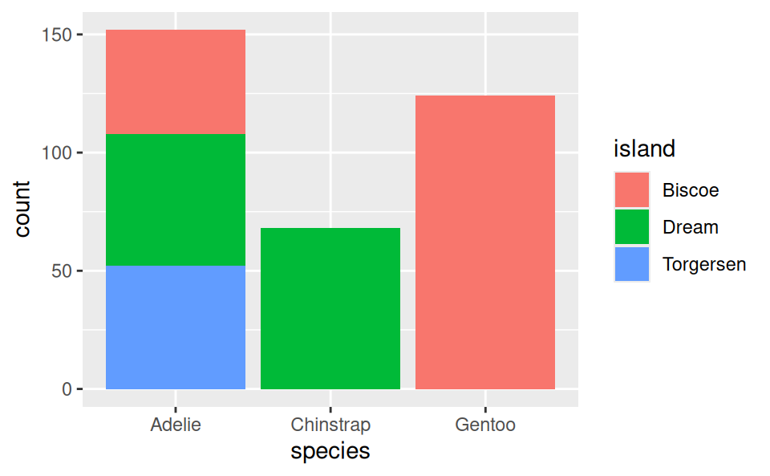
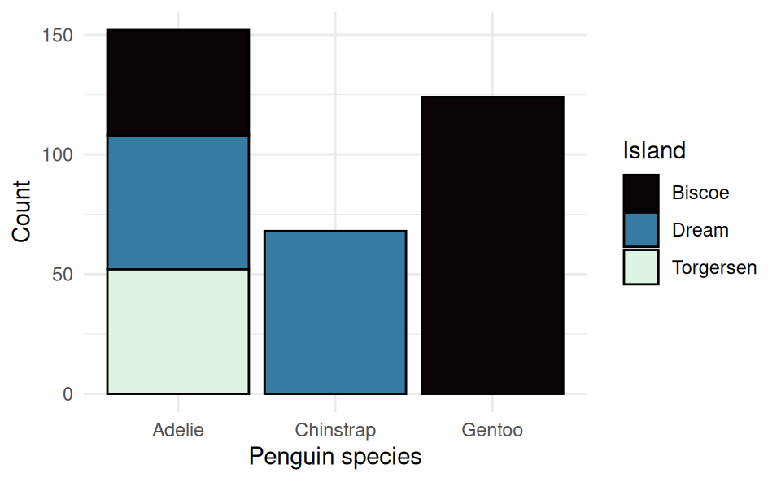

install.packages("ggplot2")
library(ggplot2)15 Data Visualization with ggplot
15.1 Introduction
ggplot is the main data visualization package in R. The gg in the name refers to “Grammar of Graphics” which is a scheme of layering different parts of a plot. As we will learn, ggplot() works by adding layers.
To get started, we first need to install and load the ggplot2 package. The name of the package is ggplot2 (with a 2), but the function we use to make the plots is just ggplot (without a 2).
We also load the same penguins data that we saw in Chapter 14:
library(palmerpenguins)
data(penguins)We will begin by recreating the plots we saw in Chapter 14 and customizing them to our liking.
15.2 Histograms
15.2.1 Basic Histogram
Let’s first show how to make a basic histogram (without customization) and then describe the different parts of the function:
ggplot(penguins, aes(body_mass_g)) +
geom_histogram()`stat_bin()` using `bins = 30`. Pick better value with `binwidth`.Warning: Removed 2 rows containing non-finite outside the scale range
(`stat_bin()`).
With ggplot(), the first argument you provide is the dataframe with the variables you want to plot. Here it’s the penguins dataframe. The second argument is the “mapping” which we provide using the aes() (aesthetics) function. For a histogram we only need to provide one variable. Because we already tell ggplot the name of the dataframe, we only provide the variable name body_mass_g here instead of typing penguins$body_mass_g.
The next thing we do is add layers. We do this using the sum operator, +. To tell ggplot to add a histogram to the plot, we add geom_histogram(). It’s good practice to put the layers on different lines to make them easier to read, as later on we’ll see that ggplot commands can get very long as we add many many layers.
We can see that ggplot gave 2 warnings when we did this command:
- It tells us it is using 30 bins and tells us how we can change this.
Warning: Removed 2 rows containing non-finite valuesis telling us that our data contain 2NAvalues that weren’t included in the plot. This is expected, because in Chapter 14 we saw that our dataset contains some missing observations.
15.2.2 Customizing a Histogram
To customize the plot, we can use options in the functions, and add more layers to the plot. There are many possibilities here. Let’s see some of these:
15.2.2.1 Changing the number of bins:
Just like the warning above told us, we can change the number of bins to a different number using the bins option in geom_histogram(). Let’s change it to use 15 bins instead:
ggplot(penguins, aes(body_mass_g)) +
geom_histogram(bins = 15)Warning: Removed 2 rows containing non-finite outside the scale range
(`stat_bin()`).15.2.2.2 Changing the color of the bins:
We can change the color of the bins using the fill option in geom_histogram(), and we can change the outline color of the bins using the color option. We add this to the previous options:
ggplot(penguins, aes(body_mass_g)) +
geom_histogram(bins = 15, fill = "navy", color = "white")Warning: Removed 2 rows containing non-finite outside the scale range
(`stat_bin()`).15.2.2.3 Changing the axis labels:
To change the names of the axis labels, we add additional layers. We can change the horizontal axis label with the xlab() function, putting in quotes what we want the new label to be. Similarly, we use the ylab() function for the vertical axis label. Because these are additional layers, we add them to the plot using the + operator:
ggplot(penguins, aes(body_mass_g)) +
geom_histogram(bins = 15, fill = "navy", color = "white") +
xlab("Penguin weight (grams)") +
ylab("Count")Warning: Removed 2 rows containing non-finite outside the scale range
(`stat_bin()`).15.2.2.4 Changing the plot theme:
What if we want to get rid of the gray background? A white background is better for plots that get printed on paper. The easiest way to do this is to change the “theme” of the plot to a more minimalistic theme. We do this by adding the theme_minimal() layer:
ggplot(penguins, aes(body_mass_g)) +
geom_histogram(bins = 15, fill = "navy", color = "white") +
xlab("Penguin weight (grams)") +
ylab("Count") +
theme_minimal()Warning: Removed 2 rows containing non-finite outside the scale range
(`stat_bin()`).15.3 Bar Plots
We can create a bar plot in a very similar way. We just use the categorical variable in place of the numeric one and use geom_bar() as the additional layers instead:
ggplot(penguins, aes(species)) +
geom_bar()We can also get a bar plot of the number of species on each island, which displays even more information:
ggplot(penguins, aes(species, fill = island)) +
geom_bar()
Here we can see that the Adelie is found on all 3 islands, but the Chinstrap is only on “Dream” island and the Gentoo is only on “Torgersen” island.
We can add layers of customization to this in a similar way. This time we will add all of the customization in one go. Here is one way to do it:
ggplot(penguins, aes(species, fill = island)) +
geom_bar(color = "black") +
xlab("Penguin species") +
ylab("Count") +
scale_fill_discrete(name = "Island",
type = c("#0B0405", "#357BA2", "#DEF5E5")) +
theme_minimal()
The color option in geom_bar() is for the outline of the bars (fill is for the fill color on the inside).
We can customize the colors and the legend name using the layer scale_fill_discrete(). This is the name of the function because this legend is for the “fill” variable, which is “discrete” because it’s a factor (as opposed to a numerical variable which would be continuous). We provide the legend name with the name option and we provide the colors using the type option. Here I’ve provided the colors using the hexidecimal format as opposed to their names like we did earlier with “navy”. This format allows you to choose exactly what shade you like. You can find the hex code for any color with many tools online. Google even has one built in if you search for “color picker”. I have chosen these colors because the differences would still be clear even if you printed out the plot in black and white.
15.4 Scatter Plots
For scatter plots we need to provide both the x variable and the y variable in the aes() command. Let’s plot the bill length against the flipper length like we did with base R:
ggplot(penguins, aes(bill_length_mm, flipper_length_mm)) +
geom_point()Warning: Removed 2 rows containing missing values or values outside the scale range
(`geom_point()`).If we want to have the colors of the dots to change with the species, we can specify that with color in aes() as well:
ggplot(penguins, aes(bill_length_mm, flipper_length_mm, color = species)) +
geom_point()Warning: Removed 2 rows containing missing values or values outside the scale range
(`geom_point()`).We can then add some more customization in the same way as before:
ggplot(penguins, aes(bill_length_mm, flipper_length_mm, color = species)) +
geom_point() +
scale_color_discrete(name = "Species") +
xlab("Bill length (in mm)") +
ylab("Flipper length (in mm)") +
theme_minimal()Warning: Removed 2 rows containing missing values or values outside the scale range
(`geom_point()`).15.5 Saving Plots
There are many different ways to save plots created by R, but a simple way to do so is to use the ggsave() function. If we want to save a plot as a PDF file we simply use the command after our ggplot() call giving the name we want to give to the plot with the appropriate file extension (such as .pdf or .png). For example:
ggplot(penguins, aes(bill_length_mm, flipper_length_mm)) +
geom_point()
ggsave("my-plot.pdf")The plot is saved in the current working directory - the folder given by the getwd() command.